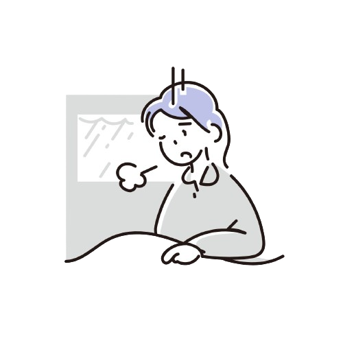
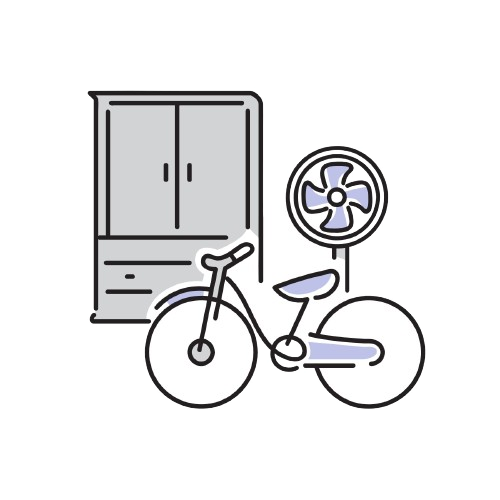

失恋痛苦的生理与心理根源
心理
1.自我概念的冲击：在恋爱过程中，人们往往会将恋人纳入自己的自我概念，形成一种 “我们” 的心理认知。失恋打破了这种认知，使个体失去了一部分与自我紧密相连的关系。研究表明，经历失恋的人在描述自我特征时，会出现更多的不确定性和混乱，这表明失恋对自我认同造成了冲击，让人陷入自我怀疑和迷茫 。

2.依恋关系的断裂：根据依恋理论，人们在亲密关系中会形成不同的依恋模式，如安全型、焦虑型和回避型。失恋意味着依恋关系的突然中断，对于具有焦虑型依恋模式的人来说，可能会引发强烈的被抛弃感和恐惧；而回避型依恋的人，虽然表面上可能显得冷漠，但内心也会受到不同程度的影响，出现情感上的压抑和困扰 。
3.认知偏差与理想化：失恋后，人们常常会出现认知偏差，不自觉地将前任理想化。这是因为记忆在情感的作用下，倾向于保留美好的部分，而过滤掉不愉快的经历。这种理想化进一步加剧了失恋的痛苦，让人们难以接受分手的现实，不断在回忆中挣扎 。
生理层面

1.大脑疼痛反应机制：当人们经历失恋，大脑中负责处理身体疼痛的区域，如前扣带回皮质和岛叶会被激活。研究人员对经历分手的人群进行扫描发现，在回忆分手场景时，这些脑区呈现出明显的活动增强，这使得失恋的痛苦在身体层面有了切实的感受，就像身体受到创伤一样。
2.神经递质变化：恋爱期间，大脑会分泌多巴胺、血清素等神经递质。多巴胺带来愉悦感和兴奋感，血清素则有助于稳定情绪。失恋后，这些神经递质的分泌量会大幅下降。以血清素为例，其水平降低会影响人的情绪调节能力，导致情绪低落、焦虑不安等症状，如同对这些神经递质 “上瘾” 后突然戒断。
3.应激激素的影响：失恋会引发身体的应激反应，促使肾上腺分泌皮质醇等应激激素。长期处于高水平的皮质醇状态，会干扰身体的正常代谢，影响免疫系统功能，导致身体更容易出现疲劳、抵抗力下降等问题，进而加重心理上的不适感 。
失恋后的常见心理反应及解析

情绪波动
2.愤怒与怨恨：部分人在失恋后会将内心的痛苦转化为对前任的愤怒和怨恨。这种情绪源于感觉自己受到了伤害、被背叛或不公正对待。愤怒可能表现为对前任的指责、抱怨，甚至采取报复行为。然而，这种情绪往往会进一步加剧自己的痛苦，不利于走出失恋的阴影 。
1.悲伤与抑郁：这是失恋后最常见的情绪反应，表现为持续的情绪低落、失去兴趣和快乐感。悲伤情绪可能会在一段时间内反复出现，影响日常生活的各个方面，如食欲、睡眠和工作效率。这种情绪的产生源于对失去的感情和关系的哀悼，是一种正常的心理反应，但如果持续时间过长，可能会发展为抑郁情绪，需要引起重视 。
3.焦虑与不安：失恋会让人对未来的感情生活产生焦虑和不安。担心自己是否还能找到真爱，害怕再次受到伤害，这些担忧会导致人们在面对新的感情机会时犹豫不决、回避亲密关系。焦虑情绪还可能伴随着身体症状，如心跳加速、呼吸急促、失眠等 。
1.社交退缩：许多人在失恋后会选择减少社交活动，避免与他人接触。这是因为他们害怕面对他人的询问和同情，担心再次受到伤害。然而，长期的社交退缩会导致孤独感加剧，进一步加重负面情绪，形成恶性循环 。
行为变化


2.强迫性回忆：不断地回忆与前任相处的点点滴滴，是失恋后常见的行为表现。这种强迫性回忆源于大脑对未完成事件的执着，试图通过不断回顾来寻找答案或弥补失去。但过度沉浸在回忆中会阻碍人们向前看，无法真正走出失恋的痛苦 。
3.生活习惯变化：失恋后可能会出现生活习惯改变的行为变化。比如，原本生活规律的人开始日夜颠倒，晚上失眠多梦，白天精神萎靡。饮食习惯也可能失调，有的人会暴饮暴食，通过食物来填补内心的空虚；而有的人则食欲不振，对曾经喜爱的食物也提不起兴趣，整个人的生活节奏被打乱。这样的反应会随着时间逐渐减轻
失恋背后的奥秘
失恋所带来的痛苦背后有着复杂的生理和心理机制。从生理角度看，大脑在失恋时会产生类似身体疼痛的反应。研究发现，当回忆起分手场景时，大脑中负责处理身体疼痛的区域，如前扣带回皮质和岛叶，会被激活。因此失恋会让我们产生一种真切的 “心痛” 感。
在爱情里，我们的大脑会分泌多巴胺等神经递质，从而感到愉悦和幸福。而失恋时，这些神经递质的水平会急剧下降，导致我们产生戒断反应，就像对某种物质上瘾后突然停止摄入一样难受。这也是为什么分手后我们会想要联系对方。
从心理层面分析，失恋意味着我们失去了一段重要的关系，以及与之相关的自我认知。我们在恋爱中往往会将对方纳入自己的 “自我概念”，分手后，这个部分被抽离，会让我们感到自我认同的混乱，仿佛失去了一部分自己，从而陷入自我怀疑和否定。